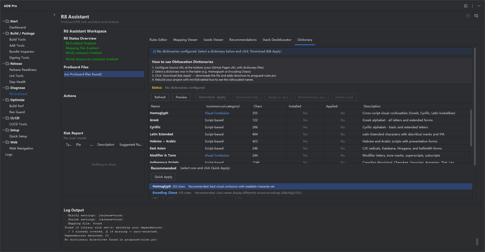

Intelligent code obfuscation made easy. Auto-detect your dependencies, generate correct keep rules, and harden your app with custom obfuscation dictionaries.

The R8 Assistant takes the guesswork out of ProGuard/R8 configuration. It scans your project's dependencies, identifies libraries that need special keep rules, and generates an optimized proguard-rules.pro file tailored to your stack.
Beyond rule generation, it provides a comprehensive suite of obfuscation tools: a reflection risk scanner that catches code patterns that silently break after obfuscation, mapping file analysis for understanding build outputs, stack trace deobfuscation for production crash reports, and a library of 11 preset obfuscation dictionaries that use Unicode confusable characters for maximum code protection.
The R8 Assistant is accessible from the R8 Assistant tab in the ADB Pro tool window, giving you a single panel to manage every aspect of code shrinking and obfuscation.
ProGuard and R8 configuration is one of the most error-prone parts of Android release builds. Here are the problems developers face without proper tooling:
-keep rule crashes your app in production —but only after release. R8 strips and renames aggressively, and the resulting ClassNotFoundException or NoSuchMethodError won't appear during debug builds.Class.forName(), getMethod(), or JSON serialization via field-name matching work fine in debug but fail when class and field names are obfuscated.Scans your build.gradle dependencies and recommends ProGuard/R8 rules from a database of 20+ popular libraries including Retrofit, Gson, Moshi, Room, Hilt, Kotlin Coroutines, and more. Each recommendation includes comments explaining why the rule is needed.
Scans your source code for reflection-based patterns that can break after obfuscation. The scanner detects 12 distinct code patterns across 7 risk categories:
| Risk Level | Category | Patterns Detected | Action Needed |
|---|---|---|---|
| High | Reflection | Class.forName(), getMethod(), getDeclaredField(), getDeclaredMethod() |
Add -keep rule for target class/method |
| High | Serialization | Gson @SerializedName, Moshi @Json, implements Serializable |
Add -keepclassmembers for fields |
| High | Room Entities | @Entity, @Dao annotations |
Add -keep for entity and DAO classes |
| High | WebView JS Bridge | @JavascriptInterface annotated methods |
Add -keepclassmembers for JS-exposed methods |
| Medium | Custom Views | Custom View constructors (: View( inheritance) |
Add -keepclassmembers for constructors |
| Medium | Kotlin Class Refs | ::class.java Kotlin class references |
Verify class is kept or add explicit rule |
| Medium | Enum Usage | Enum types used via valueOf() or values() |
Add -keepclassmembers for enum methods |
| Low | Native Methods | native method declarations, JNI bindings |
Add -keepclasseswithmembernames for native methods |
| Low | Resource Loading | getResourceAsStream(), getResource() |
Verify resource path after obfuscation |
Each detected risk includes the file path, line number, severity, and a suggested ProGuard rule. Right-click any entry to copy the rule or open the source file at the exact line.
Load and analyze mapping.txt files from R8/ProGuard builds. View class and method renaming statistics, identify heavily obfuscated packages, and search for specific class mappings to understand exactly how your code was transformed.
Paste a stack trace from a production crash and deobfuscate it using your mapping file. Supports both R8 and ProGuard mapping formats. Integrates with remote mapping file storage so you can resolve crash reports against the exact mapping used for that release.
Validate your ProGuard rules before running a full release build. The rule tester checks for common syntax errors, conflicting rules, and overly broad keep patterns that could inflate your APK size. Catch misconfigurations in seconds instead of waiting for a multi-minute build.
Download and apply preset obfuscation dictionaries that use Unicode confusable characters for maximum code protection. 11 preset dictionaries are available —from visual lookalikes (Greek, Cyrillic) to cross-encoding confusion (characters that display differently in GBK, Big5, Shift-JIS).
The dictionary lifecycle is fully managed: download presets from the built-in CDN, install them into your project with a single click, configure apply directives (-obfuscationdictionary, -classobfuscationdictionary, -packageobfuscationdictionary) directly in your proguard-rules.pro, and uninstall dictionaries you no longer need. The R8 Assistant also includes a recommendation engine that suggests the best dictionary for your obfuscation goals —visual confusion, cross-encoding chaos, or maximum entropy.
After R8 runs, it produces a seeds.txt file listing every class and member that was kept (not obfuscated or removed). The Seeds Viewer parses this file and cross-references it against your recommended rules, showing you exactly which rules had an effect and which produced no matches. This lets you prune dead rules that add noise to your configuration and verify that every library you care about is actually being protected. The viewer presents a side-by-side comparison: your rules on the left, matched seeds on the right, with unmatched rules highlighted in amber.
The built-in rules editor provides an in-panel text editor for your proguard-rules.pro file. Open the file directly in the R8 Assistant panel, edit rules with syntax highlighting, and save changes without leaving the tool window. A file selector lets you choose from multiple ProGuard configuration files in your project (e.g., proguard-rules.pro, module-specific rules, or consumer rules from library modules). You can append newly generated rules to an existing file or replace the entire contents —the editor always creates a backup before overwriting.
Production crash reports need to be deobfuscated with the exact mapping.txt from the release build. The R8 Assistant can fetch mapping files from remote sources —CI server artifact stores, GitHub Releases, GitLab job artifacts —and cache them locally for instant stack trace resolution. Configure your mapping source URL, authentication token, and file naming pattern in settings. When a crash report arrives, the assistant automatically locates and downloads the correct mapping file by version name and build variant, so you never have to manually hunt for it across build servers.
Follow these steps to generate and apply ProGuard/R8 rules for your project:
build.gradle dependencies and produces recommended keep rules.proguard-rules.pro file (or use the one-click apply button).minifyEnabled true to verify everything works.Additional configuration is available at Settings > Tools > ADB Pro > R8 Assistant, where you can customize:
proguard-rules.pro file path (override auto-detected location)After applying generated rules and building a release APK, confirm that the R8 Assistant is working correctly:
minifyEnabled true and shrinkResources true —the build should complete without errors.jadx or the Android Studio APK Analyzer to inspect the APK and confirm that class names are obfuscated (renamed to short or dictionary-based names).mapping.txt was generated in app/build/outputs/mapping/ —this file is essential for deobfuscating crash reports.-keep rules in your ProGuard configuration.Official documentation for code shrinking and obfuscation: